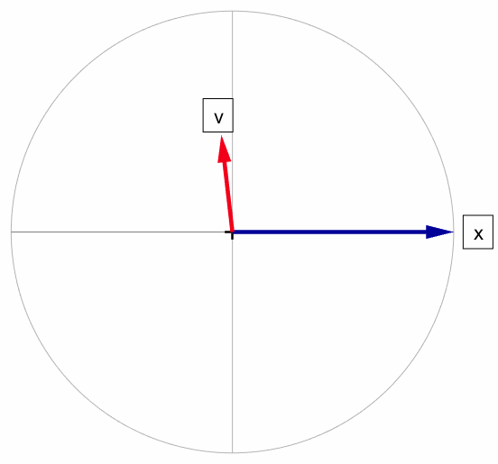

The idea of a mode was discussed elsewhere. Briefly, it is a certain motion ( an "eigenmotion", if you like ) of a mechanical or electrical system. It is a motion which does not change its "shape" over time, just its amplitude. Typical examples include a vibrating string, or a swinging pendulum.
The "shape" of the motion can be described by the amplitudes of a set of numerical parameters, like the momentary values of the positions and velocities of a number of masses. We can call such a list of numbers a "vector".
The whole idea of a mode is that this vector does not change its shape during the motion, but that only its amplitude uniformly increases, or more usually decreases, over time. As an example, a non-driven pendulum will always have the same ratio between the amplitude of its velocity and its position, and these will decay together.
The picture below shows a rotating eigenvector. The example given is the eigenvector of a pendulum.
Eigenvectors are a part of linear algebra, but they pop up in all sorts of applications. We limit ourselves to the application in control theory. In that context, eigen values represent the oscillation frequencies ( or decay times ) of natural motions of linear ( or linearized ) systems. Eigen vectors are the "shapes" of such motions.
The subject is too wide to introduce here from the ground up. We will leave that to proper textbooks. We will just jump in at the deep end, where such textbooks may stop, leaving the reader with a few practical questions.

The rotating eigenvector of a pendulum
Eigenvectors are a part of linear algebra, which is too big a subject to cover here. But let us repeat a few definitions just in case. When a vector x is multiplied by a matrix A, the result is a new vector y :
| (1) |
We can interpret this as the matrix A giving the vector x a new length and direction.
This happens literally in 2D and 3D where the vector is a visible arrow, but it holds up in general if we forget about the geometrical meaning of "length" and "direction".
As it happens, every 3D matrix A has at least its own three directions ( though they may coincide ) in which it does not change the direction of the vector x as it turns into y. It just gets shorter or longer ( or it stays the same ). Such a vector x is called an eigenvector ( from the German word for "self" ). And the idea generalizes to N dimensions.
We will take the pendulum as an example of the relation between modes and eigenvectors.
- pendulum example.
- phase plane, more than 90° phase between position and velocity, tangent line.
- animation of damped and rotating eigenvector.
- analytical expression for 2-DOF systems.
- connection to aircraft modes (including energy mode).
- frequency domain versus time domain.
- poles and zeros, root locus, eigenvalues, SVD.
- modes, resonance, anti-resonance.